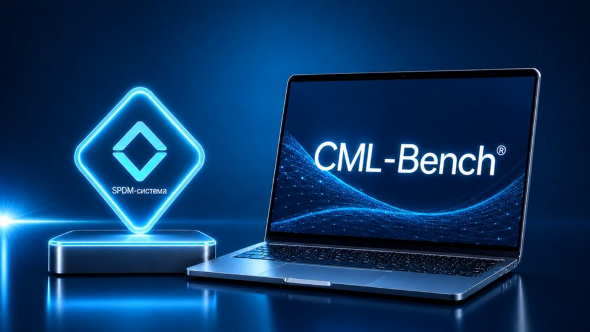

Стратегическая цель — технологическое лидерство (ТЛ): обеспечение превосходства технологий и (или) продукции по основным параметрам (функциональным, техническим, стоимостным) над зарубежными аналогами путём внедрения и развития технологии цифровых двойников (ЦД, Digital Twin) в рамках сквозного научно-технологического направления — системный цифровой инжиниринг.
CML-Bench.БАС™ — цифровая платформа разработки и применения цифровых двойников беспилотных авиационных систем. Это флагманская разработка Передовой инженерной школы «Цифровой инжиниринг», на базе которой инженеры ОКБ ПИШ ЦИ применяя подходы системного цифрового инжиниринга проводят цифровые (виртуальные) испытания в рамках соответствующих виртуальных испытательных стендов и полигонов по направлениям аэродинамики, аэроупругости и нагрузок, прочности и др.
Более подробно ознакомиться с платформой Вы можете на сайте cml-bench.ru .

Каждый тип аппарата — самолётный, вертолётный, мультироторный, конвертоплан, амфибия — требует своего набора расчётов на цифровой платформе.